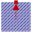

PartialBasicInductionMachinePartial model for induction machine |
|
Diagram
{kind=link}
Information
This information is part of the Modelica Standard Library maintained by the Modelica Association.
Partial model for induction machine modelsParameters (16)
| Jr |
Value: Type: Inertia (kg·m²) Description: Rotor's moment of inertia |
|---|---|
| useSupport |
Value: false Type: Boolean Description: Enable / disable (=fixed stator) support |
| Js |
Value: Jr Type: Inertia (kg·m²) Description: Stator's moment of inertia |
| useThermalPort |
Value: false Type: Boolean Description: Enable / disable (=fixed temperatures) thermal port |
| frictionParameters |
Value: Type: FrictionParameters Description: Friction loss parameter record |
| m |
Value: 3 Type: Integer Description: Number of phases |
| p |
Value: Type: Integer Description: Number of pole pairs (Integer) |
| fsNominal |
Value: Type: Frequency (Hz) Description: Nominal frequency |
| TsOperational |
Value: Type: Temperature (K) Description: Operational temperature of stator resistance |
| Rs |
Value: Type: Resistance (Ω) Description: Stator resistance per phase at TRef |
| TsRef |
Value: Type: Temperature (K) Description: Reference temperature of stator resistance |
| alpha20s |
Value: Type: LinearTemperatureCoefficient20 (¹/K) Description: Temperature coefficient of stator resistance at 20 degC |
| Lszero |
Value: Lssigma Type: Inductance (H) Description: Stator zero sequence inductance |
| Lssigma |
Value: Type: Inductance (H) Description: Stator stray inductance per phase |
| statorCoreParameters |
Value: Type: CoreParameters Description: Stator core loss parameter record; all parameters refer to stator side |
| strayLoadParameters |
Value: Type: StrayLoadParameters Description: Stray load loss parameter record |
Inputs (4)
| idq_ss |
Type: Current[2] (A) Description: Stator space phasor current / stator fixed frame |
|---|---|
| idq_sr |
Type: Current[2] (A) Description: Stator space phasor current / rotor fixed frame |
| idq_rs |
Type: Current[2] (A) Description: Rotor space phasor current / stator fixed frame |
| idq_rr |
Type: Current[2] (A) Description: Rotor space phasor current / rotor fixed frame |
Outputs (8)
| phiMechanical |
Default Value: flange.phi - internalSupport.phi Type: Angle (rad) Description: Mechanical angle of rotor against stator |
|---|---|
| wMechanical |
Default Value: der(phiMechanical) Type: AngularVelocity (rad/s) Description: Mechanical angular velocity of rotor against stator |
| tauElectrical |
Default Value: inertiaRotor.flange_a.tau Type: Torque (N·m) Description: Electromagnetic torque |
| tauShaft |
Default Value: -flange.tau Type: Torque (N·m) Description: Shaft torque |
| powerBalance |
Type: PartialPowerBalanceInductionMachines Description: Power balance |
| vs |
Default Value: plug_sp.pin.v - plug_sn.pin.v Type: Voltage[m] (V) Description: Stator instantaneous voltages |
| is |
Default Value: plug_sp.pin.i Type: Current[m] (A) Description: Stator instantaneous currents |
| i_0_s |
Default Value: spacePhasorS.zero.i Type: Current (A) Description: Stator zero-sequence current |
Connectors (5)
| flange |
Type: Flange_a Description: Shaft |
|
|---|---|---|
| support |
Type: Flange_a Description: Support at which the reaction torque is acting |
|
| plug_sp |
Type: PositivePlug Description: Positive stator plug |
|
| plug_sn |
Type: NegativePlug Description: Negative stator plug |
|
| thermalPort |
Components (15)
| frictionParameters |
Type: FrictionParameters Description: Friction loss parameter record |
|
|---|---|---|
| inertiaRotor |
Type: Inertia |
|
| inertiaStator |
Type: Inertia |
|
| fixed |
Type: Fixed |
|
| friction |
Type: Friction |
|
| statorCoreParameters |
Type: CoreParameters Description: Stator core loss parameter record; all parameters refer to stator side |
|
| strayLoadParameters |
Type: StrayLoadParameters Description: Stray load loss parameter record |
|
| powerBalance |
Type: PartialPowerBalanceInductionMachines Description: Power balance |
|
| rs |
Type: Resistor |
|
| lssigma |
Type: Inductor |
|
| lszero |
Type: Inductor |
|
| statorCore |
Type: Core |
|
| spacePhasorS |
Type: SpacePhasor |
|
| strayLoad |
Type: StrayLoad |
|
|  | thermalAmbient |
Extended by (5)
|
Modelica.Electrical.Machines.BasicMachines.SynchronousMachines Synchronous machine with reluctance rotor and damper cage |
|
|
Modelica.Electrical.Machines.BasicMachines.SynchronousMachines Electrical excited synchronous machine with damper cage |
|
|
Modelica.Electrical.Machines.BasicMachines.SynchronousMachines Permanent magnet synchronous machine |
|
|
Modelica.Electrical.Machines.BasicMachines.InductionMachines Induction machine with slipring rotor |
|
|
Modelica.Electrical.Machines.BasicMachines.InductionMachines Induction machine with squirrel cage rotor |